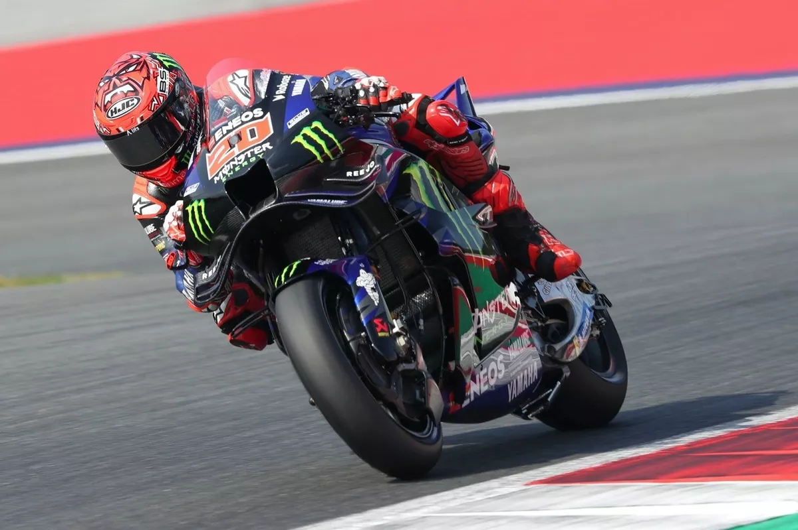
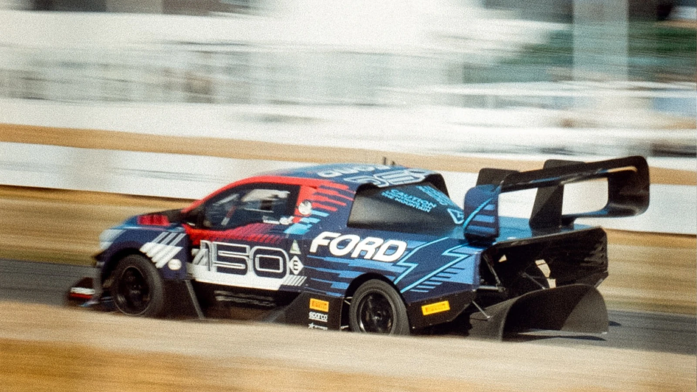

Automovilismo
Checo Pérez revela qué hará en 2025 y la fecha que anunciará si vuelve a F1
Puebla, Puebla. Como cada año, el 22 de junio se celebra alrededor del mundo al emblemático auto clásico Volkswagen Sedán, conocido en México como Vocho.
Puebla, Puebla. Como cada año, el 22 de junio se celebra alrededor del mundo al emblemático auto clásico Volkswagen Sedán, conocido en México como Vocho.
Fabio Quartararo experimentó un día más los problemas de la Yamaha y solamente pudo terminar 11º en la sprint de Austria, a más de 13 segundos de la cabeza.

Aplazada la salida del Gran Premio de Bélgica por la escasa visibilidad - La FIA se queda sin solución tras los test fallidos
Los éxitos de la Fórmula 1 junto a Liberty Media siguen acumulándose y los dueños de los derechos comerciales de la Máxima Categoría informaron que F1 Movie suma ya 571,000,000 de dólares en taquilla, siendo la película deportiva con la mayor recaudación de la historia.
La Ford F-150 Lightning SuperTruck sigue haciendo historia en el automovilismo, pues este domingo este prototipo 100% eléctrico logró su segunda gran victoria, al imponerse en el Ascenso a la Colina del Festival de la Velocidad de Goodwood 2025.
